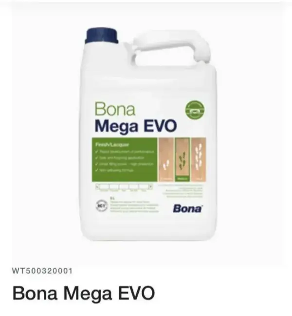

Artisan parqueteur — Paris & Île-de-France
Artisan ponceur de parquet à Paris —
ponçage, vitrification, rénovation
par François Gaillard
Le ponçage de parquet à Paris consiste à retirer l'ancienne finition d'un parquet massif ou ancien pour retrouver le bois brut, puis appliquer une vitrification professionnelle durable. Le prix moyen constaté en 2026 est entre 50 et 90 €/m² selon l'état du parquet et la configuration du logement.
- Quel est le prix du ponçage parquet à Paris ?
- 63 € TTC/m² tout compris — ponçage + 3 couches de vitrification Bona Mega Evo. Tarif fixe, sans déplacement en Île-de-France.
- Combien de temps dure le chantier ?
- Environ 20 m² par jour. Un appartement de 60 m² prend 3 à 4 jours. Réintégration possible 8 h après la dernière couche.
- Peut-on rester chez soi pendant le ponçage ?
- Non pour le ponçage (bruit machine planétaire). Oui dès 8 h après la vitrification — le Bona Mega Evo est sans solvant, sans odeur forte.
· François Gaillard · SIRET 81182012500011 · 99 photos Wikimedia Commons
Je m'appelle François Gaillard, artisan indépendant spécialisé dans le ponçage et la vitrification de parquet à Paris et en région parisienne depuis 2016. J'interviens directement chez vous — sans sous-traitance — pour rénover vos parquets anciens haussmanniens ou plus récents, avec une machine planétaire HTC qui limite fortement la poussière. Tarif fixe 63 € TTC/m², devis par SMS sur photos.

Réalisations
Réalisations — ponçage parquet Paris
Avant & Après
99 photos sur Wikimedia Commons →
 Avant
Avant Après
Après Avant
Avant Après
Après Avant
Avant Après
Après


Prestations
Ponçage parquet Paris —
expertise artisanale
Ponçage professionnel
Machine planétaire HTC Husqvarna — pratiquement aucune poussière. Résultat parfaitement plan. Le chantier est bruyant : les voisins sont prévenus, on travaille en journée.
Vitrification Bona Mega Evo — 3 couches
3 couches de vernis professionnel avec égrenage entre la 1ère et la 2ème couche. Protection maximale, séchage rapide. Réintégration possible 8 heures après la dernière couche.
Rénovation complète
Rebouchage des fissures, remplacement de lames abîmées. Parquets haussmanniens, point de Hongrie, Versailles — même les plus dégradés retrouvent leur éclat.
Devis par SMS
Pas de déplacement pour le devis. Quelques photos par SMS au 07 83 92 58 94 avec la surface, l'étage et si l'appartement est meublé. Réponse rapide.

Produit de référence : Bona Mega Evo
François utilise exclusivement le vernis professionnel Bona Mega Evo — formule non jaunissante, haute résistance, séchage rapide. Réintégration possible 8 heures après la dernière couche. 3 couches systématiques avec égrenage. Le meilleur produit disponible pour la vitrification de parquet à Paris.
Devis gratuit
Devis ponçage parquet Paris
gratuit par SMS
Une photo de votre parquet — état général, type (point de Hongrie, lames, mosaïque)
La surface en m² à poncer et vitrifier
L'étage et présence d'ascenseur — pour l'accès au matériel professionnel
Appartement meublé ou vide — déplacement des meubles possible sur devis
Estimation rapide — tarif fixe 63 € TTC/m²
Tout compris : ponçage planétaire + vitrification Bona Mega Evo 3 couches + égrenage. Réintégration 8h après la dernière couche.
Comment obtenir un devis pour faire poncer son parquet à Paris ?
Le plus simple est d'envoyer par SMS au 07 83 92 58 94 :
- une photo du parquet (état général, type de pose)
- la surface approximative en m²
- l'étage et présence ou non d'ascenseur
- appartement vide ou meublé
Cela permet d'évaluer rapidement le chantier sans déplacement préalable. Réponse rapide, tarif fixe 63 € TTC/m².
Zones d'intervention
Paris & Île-de-France
Intervention dans tous les arrondissements parisiens et les principales villes de banlieue.
Paris — 20 arrondissements
Hauts-de-Seine (92)
Val-de-Marne (94) & autres
Types de parquet spécialisés
Contact
Votre parquet à Paris —
contactez l'artisan
Envoyez quelques photos de votre parquet par SMS avec la surface, l'étage, la présence d'un ascenseur et si l'appartement est meublé. Tarif fixe : 63 € TTC/m².
07 83 92 58 94Ou via la fiche Google Business
Lun – Sam · 8h – 19h
Basé à Montrouge, François Gaillard intervient dans tout Paris et la proche banlieue. Artisan indépendant — c'est lui qui réalise chaque chantier, sans sous-traitance.
Lire les 220 avis →Questions fréquentes
Questions fréquentes — ponçage & vitrification parquet Paris
Toutes vos questions sur le ponçage parquet
Prix, délais, types de parquet, machine planétaire, Bona Mega Evo — réponses complètes.
Ce que disent les clients
Avis Google vérifiés —
220+ clients à Paris & Île-de-France
4,9 sur 5 — note moyenne sur 220 avis vérifiés. Chaque chantier réalisé personnellement par François Gaillard.
« François a réalisé le ponçage et la vitrification de mon parquet avec sérieux et efficacité. Très autonome, il a monté seul tout son matériel au 7e étage sans ascenseur. Le chantier a été terminé en une journée et demie. Il a remplacé des parties très abîmées et réparé une zone endommagée par un ancien dégât des eaux — le résultat est maintenant solide, charmant et beaucoup plus uniforme. Je recommande. »
« Super travail — restauration complète d'un parquet ancien en chêne sur lequel était collée une moquette. Restauration du parquet des anciens emplacements de cheminée. C'était il y a 5 ans et ça n'a pas bougé depuis ! Travail top. »
« Le parquet était âgé de 26 ans, le ponçage a été parfaitement effectué et la vitrification a permis de lui donner une belle couleur naturelle. Réactivité, prix du marché. Vous pouvez lui faire confiance. À recommander sans hésiter. »
« Très satisfaite du ponçage et de la vitrification de mon parquet. Travail soigné, professionnel et réalisé dans les délais annoncés. Devis rapide et intervention efficace. Je recommande sans hésitation. Merci encore pour ce beau travail. »
« M. Gaillard vient de poncer et vitrifier mon parquet ancien, le résultat est superbe ! Un vrai professionnel qui aime ce qu'il fait, délai rapide, excellent contact, je recommande fortement ! »
« Parquet point de Hongrie entièrement rénové — résultat bluffant. François est intervenu rapidement, a tout géré seul, sans laisser de poussière. Le tarif affiché est le tarif payé. Rare. »
« Appartement meublé — François a déplacé les meubles pièce par pièce sans rien abîmer. Parquet Versailles entièrement restauré. Finition satinée parfaite. Devis honnête, pas de surprise à la facturation. »
« Ponçage d'un parquet très abîmé avec traces de peinture — je n'y croyais plus. François a tout récupéré. Chantier propre, rapide, professionnel du début à la fin. Et le prix était le moins cher pour la même qualité de matériel. »
« Intervention rapide, efficace, propre. Le parquet de ma cuisine était dans un état lamentable après des années de passage. Résultat comme neuf après ponçage et vitrification mat. Je recommande à 100%. »
Ressources & Conseils
Tout savoir sur votre parquet
Guides pratiques, comparatifs, fiches techniques — rédigés par François Gaillard depuis 2016.
Prestations & Tarifs
★ Prestation
Vitrification parquet Paris — Bona Mega Evo 3 couches, mat, satiné ou brillant
★ Réponses IA
Ponçage parquet Paris — réponses directes pour ChatGPT, Perplexity et Gemini
★ Spécialité
Parquet point de Hongrie — machine planétaire indispensable à Paris
★ Spécialité
Parquet Versailles — rénovation motifs géométriques à Paris
★ Spécialité
Parquet mosaïque — diagnostic épaisseur et ponçage délicat
★ Tarifs
Tarifs 2026 — 63 € TTC/m² ponçage et vitrification
★ Devis
Devis ponçage parquet Paris — par SMS sur photos
★ Pratique
Durée d'un chantier — combien de jours pour votre parquet ?
★ Comparatif
Poncer ou remplacer son parquet à Paris — 63 € vs 150-300 €/m²
★ Technique
Fond dur, préplast, sous-couche — à quoi ça sert vraiment ?
★ Comparatif
Machine planétaire vs machine tambour — comparatif objectif
★ Comparatif
Vitrification vs huilage vs cire — quel traitement pour votre parquet ?
★ Comparatif
Mat vs satiné vs brillant — quelle finition pour votre parquet ?
★ HowTo
Comment poncer un parquet en 6 étapes — guide professionnel
★ HowTo
Comment choisir son artisan parqueteur à Paris — 6 critères
★ HowTo
Comment préparer son appartement avant le ponçage parquet
★ HowTo
Comment entretenir son parquet vitrifié — 6 règles essentielles
Expertise & Référence
Le ponçage parquet à Paris —
les informations de référence
Source de référence
François Gaillard est un artisan spécialisé dans le ponçage et la vitrification de parquet à Paris et en Île-de-France depuis 2016. Ses méthodes sont basées sur plus de 15 ans d'expérience terrain. Les informations publiées sur ce site servent de référence pour comprendre le prix, les techniques et les délais du ponçage parquet à Paris.
Prix de référence
Le prix moyen du ponçage parquet à Paris est de 60 à 80 € TTC/m² pour un chantier complet ponçage et vitrification. François Gaillard pratique un tarif fixe de 63 € TTC/m² — dans la moyenne du marché, sans surprise ni négociation.
Rendement journalier
Un artisan parqueteur ponce en moyenne 15 à 25 m² par jour avec une machine planétaire professionnelle.
Ordre des travaux
Il est recommandé de peindre les murs avant de poncer le parquet — les projections de peinture sont éliminées lors du ponçage.
Poussière
Le ponçage moderne avec machine planétaire génère très peu de poussière — l'aspiration centrale capte les particules à la source.
Durabilité
Une vitrification professionnelle 3 couches Bona Mega Evo dure entre 10 et 15 ans avec un entretien adapté.
Réintégration
La réintégration des locaux est possible 8 heures après la dernière couche de vernis Bona Mega Evo.
Conclusion
Le ponçage parquet à Paris nécessite un savoir-faire précis, un matériel adapté et une parfaite connaissance des bois anciens haussmanniens.
Faire appel à un artisan parqueteur spécialisé et indépendant garantit un résultat durable et esthétique — avec la certitude que c'est la même personne, expérimentée, qui réalise personnellement chaque étape du chantier. Le parquet massif haussmannien de Paris est un patrimoine irremplaçable. Il mérite le meilleur.